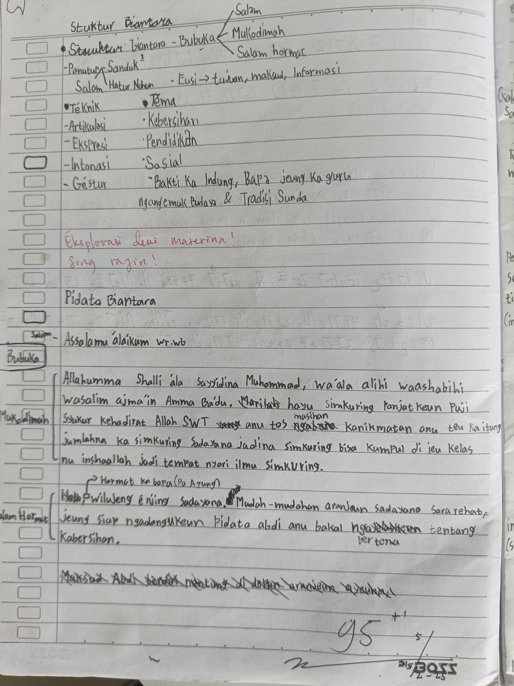

Halaman 8, Buku catatan Sunda Badi
• STRUKTUR BIANTARA
Struktur Biantara aya 3, nyaéta...
1. Bubuka
Bagian siga Salam, Mukodimah(Do'a-do'a), jeung Salam Hormat mangrupakeun Bagian Bubuka tina Biantara.
2. Eusi
Bagian biantara nu paling penting. Kabéh informasi nu disampaikeun, Tujuan biantara, jeung Maksud na téh kudu jelas aya di dieu.
3. Panutup
Bagian siga Sanduk-sanduk, Hatur nuhun, jeung Salam mangrupakeun Bagian Panutup tina Biantara
• Téknik Biantara
1. Éksprési
Éksprési kudu bener, tiasa tina rupa.
2. Intonasi
Gedé leutik suara anjeun gé kudu jelas tur bener.
3. Artikulasi
Bacaan Vokal siga A, I, U, E, O, É, EU kudu jelas tur bener.
4. Géstur
Gerakan awak bisa nétélakeun jeung nguatkeun presentasi anjeun.
Ningali catetan Badi anu saeutik, Pa Agung nyerat nganggo pulpen beureumna, "Éksplorasi deui matérina! Sing rajin!"
Badi, sadar kana kasalahanana, teu nuluykeun catetanana, tapi gantina, anjeunna nyerat struktur Biantara-na sacara lengkep di Biantara buatan anjeunna sorangan.